품질경영산업기사 (2019-04-27 기출문제)
1과목: 실험계획법
1. 모수요인에 대한 설명으로 틀린 것은?
- 수준이 기술적인 의미를 가진다.
- 요인 A의 주효과 ai들의 합의 0이다.
- 요인 A의 주효과 ai에 대하여 E(ai)=0 이다.
- 요인 A와 주효과 ai에 대하여 Var(ai)=0 이다.
(정답률: 56%)

2. 콘크리트 공장에서 압축강도를 향상시키기 위해 배합비를 4일간 랜덤하게 실험한 데이터 값이 다음과 같다. 이때 ⓨ(결측치)값을 추정하면 약 얼마인가?
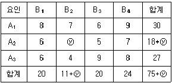
- 4
- 6
- 8
- 10
(정답률: 56%)
3. Y 반응공정의 수율을 올리려고 반응시간(A), 반응온도(B), 성분의 양(C)의 3요인에 대해 라틴방격법을 적용하여 실험하였다. 실험 결과에 대한 해석으로 맞는 것은? (단, F0.95(2, 2)=19.0 이다.)
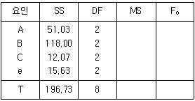
- A, B, C 모두 유의하다.
- A, B, C 모두 유의하지 않다.
- A, B는 유의하고, C는 유의하지 않다.
- A는 유의하고, B, C는 유의하지 않다.
(정답률: 52%)
4. 화학공장에서 제품의 수율에 영향을 미칠 것으로 생각되는 반응온도(A)와 원료(B)를 요인으로 2요인 실험을 하였다. 실험은 12회로 완전 랜덤화하였고, 2요인 모두 모수이다. 검정결과에 관한 내용으로 맞는 것은? (단, F0.95(2, 6)=5.14, F0.95(3, 6)=4.76, F0.99(2, 6)=10.9, F0.99(3, 6)=9.78 이다.
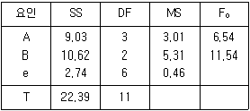
- A는 위험율 1%로 유의하고, B는 위험률 5%로 유의하다.
- A는 위험율 5%로 유의하고, B는 위험률 1%로 유의하다.
- A는 위험율 5%로 유의하지 않고, B는 위험률 1%로 유의하다.
- A는 위험율 1%로 유의하지 않고, B는 위험률 5%로 유의하지 않다.
(정답률: 50%)
5. 요인 A, B가 모두 모수인 2요인 실험을 해서 다음과 같은 분산분석을 얻었다. 오차의 기여율(pe)은 얼마인가?
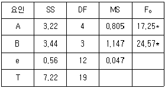
- 12.31%
- 26.94%
- 29.70%
- 31.21%
(정답률: 53%)
6. 반복이 없는 2요인 실험에서 A, B 모두 모수요인인 경우, 요인 A의 불편분산의 기대값은? (단, A는 4수준, B는 5수준의 실험이다.)
- σe2+3σA2
- σe2+4σA2
- σe2+5σA2
- σe2+12σA2
(정답률: 60%)
7. 동일한 물건을 생산하는 4대의 기계에서 부적합품 여부에 대한 동일성에 관한 실험을 하였다. 적합품이면 0, 부적합품이면 1의 값을 주기로 하고, 4대의 기계에서 나오는 100개씩의 제품을 만들어 부적합품 여부를 검사하여 다음과 같은 결과를 얻었다. 이 자료에서 기계 간의 제곱합 SA를 구하면 약 얼마인가?
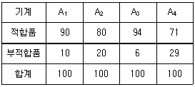
- 3.21
- 3.87
- 4.02
- 4.13
(정답률: 56%)
8. 어떤 제약회사에서 K성분의 함량을 실험한 데이터와 분산분석표이다. μ(A1)의 95% 신뢰구간을 추정하면 약 얼마인가? (단, t0.95(3)=2.353, t0.975(3)=3.182, t0.95(12)=1.782, t0.975(12)=2.179 이다.)
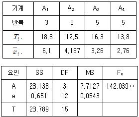
- 5.672 ≤ μ(A1) ≤ 6.528
- 5.784 ≤ μ(A1) ≤ 6.416
- 5.807 ≤ μ(A1) ≤ 6.393
- 5.861 ≤ μ(A1) ≤ 6.439
(정답률: 66%)
9. 구조식이 xijk=μ+ai+bj+ck+eijk 인 라틴방격법에서 수준수가 4일 때, 데이터를 정리한 자료가 다음과 같다. 요인 C의 VC는?
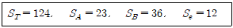
- 17.7
- 18.5
- 21.7
- 53.0
(정답률: 48%)
10. 반복수가 일정하지 않은 1요인 실험 모수모형에서 E(VA)를 구하는 식으로 맞는 것은? (단, l은 요인의 수준수, m은 반복수이다.)
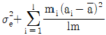
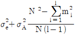
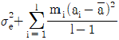
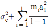
(정답률: 46%)
11. L8(27)직교배열표에서 배치할 2수준의 요인수가 3개이고, 교호작용이 2개라면, 오차항의 자유도는?
- 1
- 2
- 3
- 4
(정답률: 40%)
12. 다음은 모수요인 A와 변량요인 B인 난괴법의 데이터 구조식이다. 기본가정이 아닌 것은?
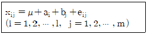
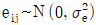
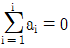
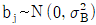
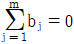
(정답률: 50%)
13. 모수모형인 반복이 일정한 1요인 실험에서 다음과 같이 분산분석을 하였다.
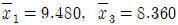
일 때, 두 평균치 차를 신뢰율 95%로 구간추정하면 약 얼마인가? (단, t0.95(12)=1.782, t0.975(12)=2.179 이다.)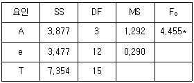
- 0.290 ≤ μ(A1)-μ(A3) ≤ 1.950
- 0.441 ≤ μ(A1)-μ(A3) ≤ 1.799
- 0.533 ≤ μ(A1)-μ(A3) ≤ 1.707
- 0.640 ≤ μ(A1)-μ(A3) ≤ 1.600
(정답률: 33%)
14. 표와 같은 1요인 실험의 데이터에서 총 제곱합(ST)을 구하면 약 얼마인가?
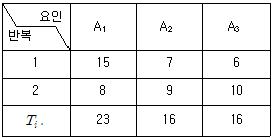
- 50.8
- 51.8
- 52.8
- 54.8
(정답률: 26%)
15. A, B 2요인이 모두 모수인 반복 없는 2요인 실험에서 A, B가 모두 유의하고, 최적조건이 A2B1 일 때의 점추정식은?
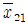
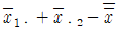
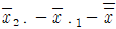
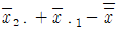
(정답률: 57%)
16. 어떤 합성섬유는 온도(x)가 증가함에 따라 수축률(y)이 직선적인 함수관계를 가지고 있다고 한다. 이를 확인하기 위하여 다음과 같은 데이터를 얻었다. 이를 이용하여 결정계수를 구하면 얼마인가?
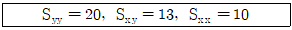
- 0.655
- 0.714
- 0.845
- 0.920
(정답률: 57%)
17. 다음 표와 같은 모수모형 반복 있는 2요인 실험의 분산분석에서 교호작용을 무시했을 때의 요인 B의 분산비(F0)는 약 얼마인가?
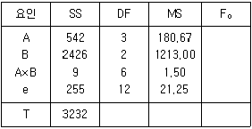
- 55.1
- 57.1
- 82.7
- 84.5
(정답률: 45%)
18. 2 수준계 직교배열표의 설명으로 틀린 것은?
- 각 열의 자유도는 1이다.
- 교호작용의 자유도는 2이다.
- a2, b2 혹은 c2은 1로 취급한다.
- 어느 열이나 0의 수와 1의 수가 반반씩 나타나 있다.
(정답률: 62%)
19. 검사원들간의 측정값의 차이를 분석하기 위해 4명의 검사원을 랜덤으로 뽑아 표준시료를 동일한 계측기로 5회씩 반복하여 측정하도록 하였다. 측정 결과를 활용하여 작성한 분산분석표가 다음과 같을 때, 요인 A의 산포의 추정치(
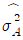
)는 약 얼마인가?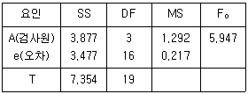
- 0.215
- 0.269
- 0.358
- 0.431
(정답률: 42%)
20. 실험계획법의 목적으로 가장 거리가 먼 것은?
- 실험에 대한 계획방법을 의미하는 것이다.
- 공정의 이상원인을 조처하기 위한 것이다.
- 최소의 실험횟수에서 최대의 정보를 얻을 수 있는가를 계획하는 것이다.
- 해결하고자 하는 문제에 대하여 실험을 어떻게 행하는지를 계획하는 것이다.
(정답률: 70%)
2과목: 통계적품질관리
21. n=4인  관리도에서
관리도에서
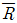
=25.22 이다. 이 공정의 군내변동(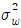
)과 군간변동(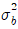
)은 각각 약 얼마인가? (단,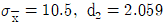
이다.)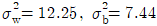
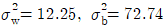
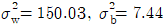
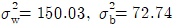
(정답률: 40%)
22. 석탄의 발열량을 측정하고자 적재량이 10톤인 트럭 10대에서 5대를 랜덤하게 취하고, 그 5대의 트력에서 30g씩 표본을 취하는 샘플링 방법을 무엇이라 하는가?
- 집락 샘플링(cluster sampling)
- 층별 샘플링(stratified sampling)
- 계통 샘플링(systematic sampling)
- 2단계 샘플링(two stage sampling)
(정답률: 60%)
23. 검사특성(OC) 곡선에서 부적합품률이 합격품질수준(P0, AQL)인 로트가 합격할 확률은?
- α
- β
- 1-α
- 1-β
(정답률: 55%)
24. 관리도에 관한 설명으로 틀린 것은?
- 공정이 안정상태가 아닌 데도 이를 발견하지 못하는 것을 제2종 오류라고 한다.
- u 관리도를 작성할 때 표본의 크기가 다르면, 일반적으로 관리한계는 계단식이 된다.
- 공정의 표준치의 변화에 대해 일반적으로 X관리도가
 관리도에 비하여 검출력이 좋다.
관리도에 비하여 검출력이 좋다. 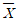
관리도의 작성 시 부분군의 크기를 증가시키면 일반적으로 관리한계의 폭은 좁아진다.
(정답률: 56%)
25. 어떤 공정을 조사해 본 결과 다음과 같은 데이터를 얻었다. 이때 변동계수는 약 얼마인가?
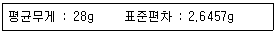
- 8.74%
- 9.45%
- 10.58%
- 89.28%
(정답률: 50%)
26. 제1종의 오류에 대한 내용으로 맞는 것은?
- (1-α)에 해당하는 확률
- (1-β)에 해당하는 확률
- 귀무가설이 옳은 데도 불구하고 이를 기각하는 오류
- 귀무가설이 옳지 않은 데도 불구하고 이를 채택하는 오류
(정답률: 78%)
27. R 관리도 중 관리한계가 3σ법에 따라 유도될 때에 관리한계(UCL, LCL)를 표현한 것으로 틀린 것은?
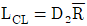
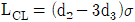
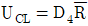
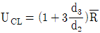
(정답률: 47%)
28. 계수형 샘플링검사 절차 - 제1부:로트별 합격품질한계(AQL) 지표형 샘플링검사방식(KS Q ISO 2859-1:2014)에 정의된 기호의 설명으로 틀린 것은?
- LQ : 한계품질
- Ac : 합격판정개수
- Re : 불합격판정개수
- CRQ : 생산자 위험 품질
(정답률: 67%)
29. 샘플의 품질표시방법에 해당되지 않는 것은?
- 샘플의 범위
- 샘플의 단가
- 샘플의 표준편차
- 샘플의 부적합품수
(정답률: 72%)
30. 표본의 부적합수가 25일 때, 모부적합수에 대한 95% 양쪽 신뢰한계의 신뢰하한값은 얼마인가? (단, u0.95=1.96, u0.975=1.96, u0.99=2.326, u0.995=2.576 이다.)
- 15.2
- 16.8
- 33.2
- 34.8
(정답률: 46%)
31. M 부품의 기본치수가 20cm이고, 그 허용차가 ±0.⑤cm로 주어졌을 때, n=8, k=1.74가 되는 계수 및 계량 규준형 1회 샘플링 검사(KS Q 0001:2013) 중 계량 규준형 1회 샘플링 검사 방식에서
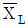
과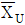
는 각각 약 얼마인가? (단, σ=0.015, α=0.⑤, β=0.10 이다.)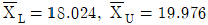
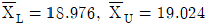
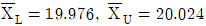
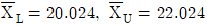
(정답률: 52%)
32. 관리도 - 제2부:슈하트 관리도(KS Q ISO 7870-2:2014)에서 정의된 계수형 관리도가 아닌 것은?
- np 관리도
- p 관리도
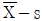
관리도- u 관리도
(정답률: 58%)
33. 합리적인 군구분이 안 될 때 사용하는 관리도는?
- c 관리도
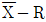
관리도- p 관리도
- X-Rm 관리도
(정답률: 63%)
34. 확률에 대한 설명으로 틀린 것은?
- 사상 A, B가 P(A∩B)=P(A)⋅P(B)일 때, A와 B는 서로 종속이다.
- 사상 A와 B가 서로 배반이면, P(A∪B)=P(A)+P(B)이다.
- 사상 A가 여사상 AC에 대하여 P(AC)=1-P(A)가 성립한다.
- 두 사상 A, B에 대하여 P(A∪B)=P(A)+P(B)-P(A∩B) 가 성립한다.
(정답률: 76%)
35. A제조회사가 제조하는 핀의 지름은 모표준편차가 0.12cm인 정규분포를 따른다. 제조법을 개량하여 제품에서 10개를 추출하여 조사한 결과 시료표준편차는 0.1cm이었다. 핀의 변동 폭이 작아졌다고 할 수 있는지 5%의 유의수준으로 검정할 때의 사항으로 맞는 것은?
- H1은
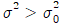
이다. - H0는 σ2＜0.1 이다.
- 검정통계량은 t 분포를 따른다.
- 검정통계량은 X2 분포를 따른다.
(정답률: 50%)
36. 모평균의 구간추정에 대한 설명으로 틀린 것은?
- 분산이 크면 신뢰구간은 좁아진다.
- 신뢰수준을 높이면 신뢰구간이 넓어진다.
- 표본의 크기를 크게 하면 신뢰구간이 좁아진다.
- 분산과 표본의 크기는 신뢰구간의 크기에 상반된 작용을 한다.
(정답률: 43%)
37. 모부적합수에 대한 문제를 다룰 때 모평균부적합수 m이 m＞5이면, 푸아송분포로 처리하지 않고, 어떤 분포로 근사할 수 있는가?
- X2 분포
- 정규분포
- 초기하분포
- 이항분포
(정답률: 66%)
38. 표준편차(σ)를 아는 경우에 평균치의 검정 또는 추정에 사용되는 분포는?
- t 분포
- X2 분포
- F 분포
- 정규분포
(정답률: 63%)
39. 두 특성치에 대해 Sxx=36.65, Syy=2356.24, Sxy=263.75 일 때 결정계수는 약 몇 %인가?
- 80.6
- 82.6
- 85.6
- 88.6
(정답률: 56%)
40. 검사의 소요시간은 평균이 30분, 표준편차가 5분인 정규분포를 따른다고 한다. 검사 합격시간이 35분 이내라고 한다면, 전체의 몇 %가 합격하겠는가?
- 69.14
- 84.13
- 95.45
- 99.73
(정답률: 57%)
3과목: 생산시스템
41. JIT 생산방식의 7가지 낭비에 해당하지 않는 것은?
- 사고의 낭비
- 과잉생산의 낭비
- 운반의 낭비
- 대기시간의 낭비
(정답률: 73%)
42. 생산활동의 원활한 수행, 자원의 유용, 시설의 합리적 할당이 시간적 관점에서 이루어진 생산계획은?
- 설비계획
- 자재계획
- 일정계획
- 진도계획
(정답률: 69%)
43. 흐름작업의 생산성을 표시하는 지수로 가장 효과적인 것은?
- 수익률
- 표준화율
- 고장 도수율
- 라인밸런스 효율
(정답률: 79%)
44. 공정별 배치에 관한 설명으로 맞는 것은?
- 재고나 재공품이 증가한다.
- 작업내용이 단순하므로 훈련이 용이하다.
- 운반거리가 단축되고 제품의 흐름이 빠르다.
- 수요변화, 제품변경 등에 대한 유연성이 적다.
(정답률: 49%)
45. 품목 A의 연간 수요량이 500개, 1회 발주비용은 1000원, 연간 단위당 재고유지비용은 100원 일 때, 연간 총 재고비용은 얼마인가?
- 100원
- 5000원
- 10000원
- 20000원
(정답률: 46%)
46. ABC 분석 중 등급별로 총가치에 대한 비율이 맞는 것은?
- A 품목 : 15~20%
- A 품목 : 70~80%
- B 품목 : 30~40%
- C 품목 : 40~60%
(정답률: 79%)
47. 3개의 작업(I, II, III)은 모두 기계 A를 먼저 거친 다음에 기계 B를 거친다. 존슨의 규칙에 의한 작업순서는?
- Ⅰ→Ⅱ→Ⅲ
- Ⅰ→Ⅲ→Ⅱ
- Ⅱ→Ⅲ→Ⅰ
- Ⅲ→Ⅱ→Ⅰ
(정답률: 49%)
48. 여유시간의 분류에서 일반여유가 아닌 것은?
- 인적 여유
- 소로트 여유
- 피로 여유
- 불가피 지연여유
(정답률: 66%)
49. 전사적 자원관리(Enterprise Resource Planning, ERP)의 특징으로 틀린 것은?
- 적시생산시스템
- 실시간 정보처리체계의 구축
- 오픈 클라이언트 서버 시스템
- 기업 간 자원활용의 최적화 추구
(정답률: 74%)
50. PERT에서 어떤 활동의 3점시간 견적 결과 (낙관치=4, 정상치=10, 비관치=10)를 얻었다. 이 활동시간의 기대치(te)와 분산(σ2)의 추정치는 각각 얼마인가?
- te=8, σ2=1
- te=8, σ2=2
- te=9, σ2=1
- te=9, σ2=2
(정답률: 50%)
51. 작업공정도(Operation process chart)를 작성할 때 사용하는 공정 도시 기호는?
- 가공, 운반
- 가공, 검사
- 가공, 정체
- 가공, 검사, 운반, 정체
(정답률: 65%)
52. 메모모션 분석을 적용하기에 적절하지 않은 것은?
- 조작업분석
- 사이클이 긴 작업분석
- 배치나 운반개선의 작업분석
- 사이클이 규칙적인 작업분석
(정답률: 52%)
53. 단순지수평활법에서 특정 기간의 수요예측치를 구하기 위하여 반드시 필요한 자료가 아닌 것은?
- 평활계수
- 불규칙변동지수
- 가장 최근의 예측치
- 가장 최근의 실제수요량
(정답률: 68%)
54. 어떤 작업자의 시간연구결과 단위당 정미시간이 20분 소요되었다. 여유율이 정미시간의 10%일 때 외경법으로 계산한 표준시간은?
- 11.4분
- 13.6분
- 17.6분
- 22.0분
(정답률: 63%)
55. 자주보전활동 중 “설비의 기능구조를 알고 보전기능을 몸에 익힌다.”라는 내용은 어느 단계에 해당되는가?
- 1단계 : 초기청소
- 2단계 : 발생원⋅곤란개소 대책
- 3단계 : 청소⋅급유⋅점검기준 작성
- 4단계 : 총점검
(정답률: 65%)
56. 새로운 설비를 계획하거나 건설할 때 보전정보나 새로운 기술을 고려하여 신뢰성, 보전성, 경제성, 조작성, 안전성 등이 높은 설계로 하여 설비의 열화손실을 적게 하는 활동을 무엇이라 하는가?
- 보전예방
- 예방보전
- 개량보전
- 사후예방
(정답률: 58%)
57. MRP 시스템에서 MRP의 구성 요소들의 조립순서를 나타내고, 각 조립순서의 단계별로 필요한 소요량과 조달기간을 결정하는 것은?
- 부품명세서
- 조립명세서
- 자재명세서
- 재고기록서
(정답률: 50%)
58. PTS 법의 종류 중 MTM(Method-Time Measurement)에 관한 설명으로 맞는 것은?
- 1966년 C.Heyde에 의해 공표되었으며 비교적 쉽게 배우고 적용할 수 있는 장점이 있다.
- A. B. Segur가 1924년 Gilbreth가 제안한 인간의 기본동작인 서블릭을 기초로 하여 최초로 개발하였다.
- 1948년 H. B. Maynard 등에 의해 발표되었으며 유일하게 모든 연구자료와 연구방법이 공표된 PTS 시스템이다.
- 1934년부터 1938년까지 Phico Radio Corp.의 노동조합에서 종래의 스톱워치에 의한 표준시간을 불신하였기에 Joseph H. Quick 등이 중심이 되어 개발하였다.
(정답률: 59%)
59. 테일러 시스템과 가장 관계가 깊은 것은?
- 동시관리
- 과업관리
- 이동조립법
- 기계설비 중심
(정답률: 79%)
60. PERT/CPM 에 대한 설명으로 틀린 것은?
- PERT 에서의 비용에만 관심을 둔다.
- PERT 에서는 각 활동시간을 확률변수로 간주한다.
- PERT 에서는 주공정을 수행하는 데 소요되는 시간을 정규분포로 간주한다.
- CPM 에서 프로젝트 완료시간을 단축하기 위해서는 주공정상에 있는 활동을 택하여 단축하여야 한다.
(정답률: 66%)
4과목: 품질경영
61. 측정시스템 변동의 유형 중 반복성을 표현한 것으로 맞는 것은?
- 계측기의 기대 작동범위 영역에서 편의값의 차
- 같은 시료의 동일 특성을 같은 측정계기를 이용하여 다른 평가자들에 의해 구해진 측정값 평균의 변동
- 같은 마스터 시료 또는 같은 시료의 한 특성에 대하여 장기간 측정을 할 때 얻어지는 측정값의 총변동
- 같은 시료의 동일 특성을 같은 측정계기를 이용하여 한 명의 평가자가 여러 번 측정하여 구한 측정값의 변동
(정답률: 70%)
62. ISO 9000 패밀리에 대한 설명으로 적합하지 않은 것은?
- 조직 활동의 품질 개선
- 부서 간⋅계층 간 의사소통의 원활화
- 품질시스템 요구 사항에 대한 신뢰감 부여
- 환경경영의 효율을 통한 경제적 수익 증대
(정답률: 65%)
63. 사내규격의 양식으로 구비되어야 할 조건이 아닌 것은?
- 이해하기 쉬운 양식일 것
- 일률적이며 특수한 양식일 것
- 유지, 취급, 보관관리가 용이할 것
- 표준의 내용을 충분히 전달하는 기능을 유지할 것
(정답률: 83%)
64. QC 7가지 도구 중에서 부적합, 결점, 고장 등의 발생 건수를 분류하여 항목별로 나누어 크기 순서대로 나열한 그림은?
- 파레토도
- 그래프
- 체크시트
- 산점도
(정답률: 49%)
65. 산업표준화의 실시가 생산 제조업체에 미치는 효과로 틀린 것은?
- 자재가 절약된다.
- 수요파악이 용이하다.
- 생산능률이 향상된다.
- 제품 다양화가 용이하다.
(정답률: 67%)
66. QC 분임조 활동의 기본이념과 가장 거리가 먼 것은?
- 기업의 체질개선과 발전에 기여한다.
- 품질매뉴얼과 절차서를 작성, 검토 한다.
- 인간의 능력을 발휘하여 무한한 가능성을 창출한다.
- 인간성을 존중하고 삶의 보람이 있는 명랑한 직장을 조성한다.
(정답률: 46%)
67. 설계품질을 결정할 때, 고려해야 할 사항으로 맞는 것은?
- 신뢰성과 보전성
- 기술수준과 코스트
- 품질보증과 제품책임
- 제조품질과 적합품질
(정답률: 58%)
68. 6 시그마의 본질로 볼 수 없는 것은?
- 고객 중심의 품질경영
- 벨트제도를 활용한 체계적 인재 육성
- ISO 9000 인증제도를 이용한 새로운 기법
- 프로세스 평가⋅개선을 위한 과학적⋅통계적 방법
(정답률: 69%)
69. 공정능력지수를 설명한 것으로 틀린 것은?
- 공정능력지수의 역수를 공정능력비라 한다.
- 공정능력지수가 1.33이면 2700ppm에 해당한다.
- 공정능력지수 값이 1.33~1.67이면 공정능력이 우수하다고 판단한다.
- 규격의 산포허용 범위에 비추어 산포를 얼마나 잘 하는지를 평가하는 척도이다.
(정답률: 53%)
70. 수치 맺음에 관한 설명으로 틀린 것은?
- 2.3078을 유효숫자 2자리로 맺으면 2.3이다.
- 3.1961을 소수점 이하 2자리로 맺으면 3.20이다.
- 6.8349를 소수점 이하 3자리로 맺으면 6.835이다.
- 2.06719를 유효숫자 4자리로 맺으면 2.0672이다.
(정답률: 65%)
71. 한국산업규격의 부문기호에서 R에 해당하는 부문은?
- 수송기계
- 금속
- 전기⋅전자
- 의료
(정답률: 74%)
72. 품질관리부문은 스텝기능이므로 스텝으로서 책임을 수행하기 위한 어느 정도의 권한이 필요하다. 일반적으로 품질관리부문의 권한으로 부여하지 않는 사항은?
- 품질관리 데이터의 현장수집 연구
- 품질관리상 필요시 어떤 현장이든 자유로운 출입 및 시료 채취
- 품질관리상 필요한 항목에 대한 각 부서장과 직접 연락
- 품질관리부문의 판단으로 품질표준, 작업표준, 검사표준 등을 변경
(정답률: 55%)
73. 고객 요구 품질과 제품의 기능을 기본기능, 2차 기능, 3차 기능으로 전개하여 2원 매트릭스표로 상호 연관 관계를 분석 정리하여 고객에게 가장 중요한 제품기능을 추출하는 과정을 무엇이라 하는가?
- DR(Design Review)
- VOC(Voice of Customer)
- QFD(Quality Function Development)
- TRIZ(Teoriya Resheniya Izobretatelskikh Zadatch)
(정답률: 64%)
74. 어떤 조립품의 구멍과 축의 치수가 다음 표와 같이 주어질 때, 최소틈새는 얼마인가?
- 0.001
- 0.002
- 0.003
- 0.006
(정답률: 68%)
75. 품질시스템이 제대로 구축되려면 회사에서 품질개념을 제일 우선시해야 한다. 품질개념을 중시하는 기업문화를 설명한 것으로 틀린 것은?
- 품질담당 중역이 회사에서 핵심역할을 한다.
- 품질은 모든 부서, 모든 사람들의 책임이라는 인식이 퍼져 있어야 한다.
- 회사 내 모든 품질문제는 최고의 품질 전문가를 초빙하여 자문을 받아 처리한다.
- 품질에 대한 충분한 교육과 훈련, 품질성과에 대한 성과급제도가 마련되어야 한다.
(정답률: 66%)
76. 제품 사용 시 사고가 발생했을 때의 대책으로 피해자의 구제조치가 우선하는 것은?
- 제품안전(PS)
- 제품안전기술(PST)
- 제조물책임방어(PLD)
- 제조물책임예방(PLP)
(정답률: 55%)
77. 품질경영시스템 - 요구사항(ISO 9001:2015)에서 제시하는 품질경영의 기본적인 원칙으로 볼 수 없는 것은?
- 리더십
- 고객중시
- 주관적인 의사결정
- 조직구성원 적극참여
(정답률: 78%)
78. 제품이나 서비스의 품질을 개선하고 유지⋅관리에 소요되는 비용과, 그럼에도 불구하고 발생되는 실패비용을 포함하여 품질코스트라 한다. 품질코스트의 종류 중 관리가 가능한 비용으로 적합코스트에 해당하는 것은?
- 예방코스트와 평가코스트
- 예방코스트와 내부실패코스트
- 평가코스트와 외부실패코스트
- 내부실패코스트와 외부실패코스트
(정답률: 70%)
79. 제품 또는 서비스가 소정의 품질요구사항을 지니고 있다는 타당한 신뢰감을 주기 위해 필요한 계획적이고 체계적인 활동을 의미하는 것은?
- 품질보증
- 품질관리
- 품질검사
- 품질개선
(정답률: 68%)
80. 복잡한 요인이 얽힌 문제에 대하여 그 인과관계를 명확히 함으로써 적절한 해결책을 찾는 방법으로, 각 요인의 인과관계를 논리적으로 연결하여 적절한 문제해결을 이끌어 내는 데 유효한 수법을 무엇이라 하는가?
- 연관도법
- PDPC 법
- 계통도법
- 매트릭스도법
(정답률: 68%)
그러나 "요인 A의 주효과 ai에 대하여 E(ai)=0 이다."는 맞는 설명입니다. 이는 모수요인의 주효과의 평균이 0이라는 의미입니다. 이는 모수요인이 설명하고자 하는 현상에 대해 특정 변수의 효과를 나타내는 것이기 때문에, 이 변수의 효과가 전반적으로 양수인지 음수인지에 대한 편향성이 없다는 것을 의미합니다.